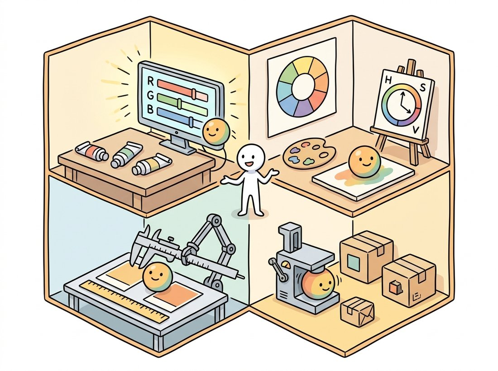

"Hue is just an angle, saturation is just a radius, and yet everyone insists I have a personality."
A Mildly Desaturated Color Channel
Color is not a property of light; it is a three-dimensional summary your visual system computes, and a color space is just a coordinate system for that summary, so the right space to work in depends entirely on the job: RGB for sensors and displays, HSV for intuitive selection, Lab for perceptual distances, and YCbCr for compression. Most color bugs in vision code are coordinate-system bugs: arithmetic done in a space where it has no meaning, or thresholds set in a space where the decision boundary is needlessly tangled. Learn what each space is for and the bugs become design choices. The illustration below shows one color described four different ways, one room per job.

Section 1.3 closed the books on the brightness of a single channel. This section explains the channel dimension itself: why three numbers, what they mean, and why the same pixel wears different coordinates in different spaces. The "why three" has a biological answer. Human retinas carry three cone types with broad, overlapping spectral sensitivities; every physical light spectrum, no matter how complex, is collapsed into three cone responses. Two physically different spectra that produce the same three responses (metamers) are literally the same color to us. Trichromacy is why cameras have three channels, displays have three primaries, and your arrays from Chapter 0 have shape (H, W, 3): machines copied our compression scheme.
1. From Spectra to Coordinates Beginner
Color science formalized trichromacy in 1931, when the CIE defined the XYZ color space from color-matching experiments: a device-independent reference in which any visible color has coordinates, and against which every practical color space is defined. You will rarely manipulate XYZ directly, but it is the hub through which conversions like RGB to Lab actually travel, and it pins down two ideas this section relies on. First, a white point: the XYZ coordinates declared to be "white" (daylight D65 for nearly all imaging), which anchors white balance from Section 1.1. Second, a gamut: the volume of colors a device can produce; sRGB, the default space of consumer imaging and the web, covers a modest gamut chosen to match 1990s CRT phosphors, and remains the assumed encoding of virtually every dataset you will train on.
2. RGB and the Gamma Trap Intermediate
The RGB values in an ordinary image file are not linear light measurements. As Figure 1.1.1 showed, the ISP applies a gamma curve: sRGB stores approximately the 1/2.2 power of linear intensity, spending more code values on dark tones, where human vision is most discriminating, which is quantization wisdom straight out of Section 1.2. The exact sRGB encoding is piecewise:
$$V_{\text{sRGB}} = \begin{cases} 12.92\, L, & L \le 0.0031308 \\ 1.055\, L^{1/2.4} - 0.055, & L > 0.0031308 \end{cases}$$where $L$ is linear intensity in $[0, 1]$. The trap: arithmetic that is physically meaningful on linear light (averaging, blurring, resizing, alpha blending) is applied daily to gamma-encoded values, where it is quietly wrong. Code 1.4.1 shows the canonical symptom.
import numpy as np
def srgb_to_linear(v):
v = v / 255.0
return np.where(v <= 0.04045, v / 12.92, ((v + 0.055) / 1.055) ** 2.4)
def linear_to_srgb(L):
s = np.where(L <= 0.0031308, 12.92 * L, 1.055 * L ** (1 / 2.4) - 0.055)
return np.clip(255 * s, 0, 255)
red = np.array([255.0, 0.0, 0.0])
green = np.array([0.0, 255.0, 0.0])
naive = (red + green) / 2 # averaging the CODES
proper = linear_to_srgb((srgb_to_linear(red) + srgb_to_linear(green)) / 2)
print("average of codes :", naive.round(0)) # dark, muddy olive
print("average of light :", proper.round(0)) # the yellow a camera would see
average of codes : [128. 128. 0.]
average of light : [188. 188. 0.]
Filtering, resizing, blending, and brightness statistics are physically meaningful on linear light; thresholds tuned by eye, histogram views, and most pretrained models live on gamma-encoded sRGB. Neither is "correct" universally; what matters is choosing deliberately. High-quality pipelines decode to linear, compute, and re-encode at the end. Pragmatic ML pipelines stay in sRGB throughout, and that is defensible too, because the network learns the encoding; what is not defensible is mixing the two mid-pipeline without noticing. The point operations of Chapter 2 make this distinction precise with gamma correction as a tool rather than a trap.
3. HSV: Color the Way You Describe It Beginner
RGB answers "how much of each primary?", which is the wrong question for tasks like "select everything red-ish". HSV re-parameterizes the same cube into hue (which color, as an angle around a color wheel), saturation (how vivid, as a radius from gray), and value (how bright). Figure 1.4.1 shows the geometric relationship: HSV is the RGB cube stood on its black corner and described in cylindrical coordinates.
HSV's killer application is color-based selection: a "red object" occupies a narrow hue interval regardless of how bright or washed-out it appears, so a box in HSV often replaces an awkward curved region in RGB. This is the workhorse of classical color segmentation, which Chapter 11 develops fully, and of the threshold-based masks of Chapter 2. Two OpenCV quirks ambush everyone: hue is stored halved (range 0 to 179) so it fits in a uint8, and red sits at the wraparound, needing two ranges. Code 1.4.2 handles both.
import cv2
import numpy as np
# Self-contained scene: three colored disks on gray.
img = np.full((240, 320, 3), 128, np.uint8)
cv2.circle(img, (80, 120), 40, (0, 0, 220), -1) # red disk (BGR order!)
cv2.circle(img, (160, 120), 40, (0, 200, 0), -1) # green disk
cv2.circle(img, (240, 120), 40, (200, 80, 0), -1) # blue disk
hsv = cv2.cvtColor(img, cv2.COLOR_BGR2HSV)
# Red hue straddles 0 degrees, so it needs TWO inRange windows.
# Reminder: OpenCV stores hue as degrees/2, so the wheel ends at 179.
mask = (cv2.inRange(hsv, (0, 80, 60), (10, 255, 255))
| cv2.inRange(hsv, (170, 80, 60), (179, 255, 255)))
print("red pixels selected:", int(mask.sum() // 255))
print("true disk area :", cv2.countNonZero(
cv2.circle(np.zeros((240, 320), np.uint8), (80, 120), 40, 255, -1)))
red pixels selected: 5024
true disk area : 5025
Hue is naturally an angle from 0 to 360 degrees, but OpenCV stores it halved, 0 to 179, so a full hue fits in one uint8 byte. The result is that pure red lives at both ends of the wheel (0 and 179) and any single threshold window splits it in two, which is why every OpenCV tutorial on "detecting red" quietly needs two inRange calls. Generations of beginners have concluded their camera simply cannot see red. It can; the byte just ran out of room.
4. Lab: When Distance Must Mean Difference Advanced
Neither RGB nor HSV distances track perception: two greens 20 units apart can look identical while two grays 20 units apart look clearly different. CIE Lab was engineered so that Euclidean distance approximates perceived difference. It separates lightness $L^*$ from two opponent axes, $a^*$ (green to red) and $b^*$ (blue to yellow), echoing the opponent-color wiring of human vision, and applies a cube-root nonlinearity matching perceptual compression:
$$f(t) = \begin{cases} t^{1/3}, & t > (6/29)^3 \\ \tfrac{1}{3}\left(\tfrac{29}{6}\right)^2 t + \tfrac{4}{29}, & \text{otherwise} \end{cases}$$with $L^* = 116 f(Y/Y_n) - 16$, $a^* = 500\,[f(X/X_n) - f(Y/Y_n)]$, and $b^* = 200\,[f(Y/Y_n) - f(Z/Z_n)]$, where $(X_n, Y_n, Z_n)$ is the white point. The payoff is $\Delta E$, the industry-standard color difference: $\Delta E_{76}$ is plain Euclidean distance in Lab, and the refined $\Delta E_{2000}$ corrects its known biases. A $\Delta E$ near 1 is a just-noticeable difference; below 2 is commercially "the same color" in most industries. Code 1.4.3 measures whether two production batches match.
import numpy as np
from skimage import color
# Two batches of "brand orange" that look identical in isolation.
batch_a = np.array([[[235, 122, 36]]], dtype=np.float64) / 255
batch_b = np.array([[[241, 117, 29]]], dtype=np.float64) / 255
lab_a = color.rgb2lab(batch_a) # handles sRGB decoding + D65 white point
lab_b = color.rgb2lab(batch_b)
de76 = float(np.linalg.norm(lab_a - lab_b))
de2000 = float(color.deltaE_ciede2000(lab_a, lab_b)[0, 0])
print(f"Delta E 1976: {de76:.2f} Delta E 2000: {de2000:.2f}")
# A Delta E 2000 under ~2.0 passes most print/brand color tolerances.
Here is the experiment that makes Lab click. Take two deep blues that differ by 6 RGB code values and two mid-greens that also differ by 6 code values: the same Euclidean step in RGB. Show them to a person and the greens look obviously different while the blues look identical, because human vision discriminates green far more finely than blue. RGB distance is a liar: it reports both pairs as equally far apart when perception does not. Lab was engineered to fix exactly this. After conversion the green pair lands a large $\Delta E$ apart and the blue pair a small one, so the number finally tracks what the eye reports. This is why "nearest color" search, palette reduction, and brand-color tolerances are all done in Lab and never in raw RGB: the metric has to agree with the observer before the distance means anything.
Writing RGB to Lab by hand means undoing the sRGB gamma (Code 1.4.1), a 3×3 matrix to XYZ, white-point normalization, the piecewise cube-root, and the $L^* a^* b^*$ assembly: roughly 40 lines with three classic bug sites (wrong white point, forgotten gamma, matrix for the wrong RGB standard). skimage.color.rgb2lab(rgb) is one line and handles all of it, with siblings (rgb2hsv, rgb2ycbcr, rgb2xyz, deltaE_ciede2000) covering this entire section. OpenCV's cv2.cvtColor(img, cv2.COLOR_BGR2LAB) is the fast uint8 route, with the gotcha that it rescales: $L^*$ to $[0, 255]$ and $a^*, b^*$ shifted by 128.
Who: A computer vision engineer at a produce-grading equipment manufacturer.
Situation: The company's tomato line classified ripeness from RGB thresholds tuned carefully at the factory.
Problem: At customer sites, with different luminaires and aging bulbs, the same fruit landed in different grade bins; recalibrating RGB thresholds per site took a technician most of a day.
Decision: The engineer moved the decision to Lab space: ripeness became a threshold on $a^*$ (the green-to-red axis) with a mild $L^*$ gate, after a per-site white balance against a gray reference tile, applying the capture-control lesson of Section 1.1.
Result: Cross-site grade agreement rose from 81% to 96%, and site calibration shrank to photographing one gray tile.
Lesson: Do not fight a tangled decision boundary with more thresholds; change coordinates until the boundary is simple. Color spaces are features, and choosing the right one is feature engineering.
You now have every piece needed for a tool that real packaging and print teams pay for. Build a command-line checker that takes a product photo plus a target brand color, white-balances the photo against a gray reference tile (the capture-control trick from Section 1.1), uses the HSV hue window of Code 1.4.2 to mask the branded region, averages that region's color, converts both the measured color and the target to Lab, and reports the $\Delta E_{2000}$ from Code 1.4.3 with a pass or fail against a tolerance you set (under 2 is a common print standard). The payoff over the section exercises is that this is a complete pipeline rather than one snippet: selection in HSV, measurement in Lab, and a verdict a non-engineer can read. It makes a showable portfolio piece, and the same skeleton powers the tomato grader above, fabric-dye matching, and display-calibration audits.
5. YCbCr: Color for Compression Intermediate
The final space exists for neither perception nor intuition but for bandwidth. Human vision resolves brightness detail far more sharply than color detail, so codecs split images into luma $Y'$ (a weighted sum of gamma-encoded R, G, B reflecting the eye's sensitivities) and two chroma differences:
$$Y' = 0.299\,R' + 0.587\,G' + 0.114\,B' \qquad \text{(BT.601)}$$The weights are not equal because the eye is not: green contributes most of our sense of brightness and blue the least, the same luminance bias that doubled the green filters in the Bayer pattern of Section 1.1. The two chroma channels $C_b$ and $C_r$ then encode blue-difference and red-difference. The reward is chroma subsampling: storing chroma at half resolution in each direction (the 4:2:0 scheme) discards 50% of the data before any compression begins, almost invisibly. JPEG, WebP, and essentially every video codec do this, as Section 1.5 will exploit. Code 1.4.4 simulates the round trip and measures how little is lost on a typical image.
# Simulate 4:2:0 chroma subsampling: keep luma at full resolution,
# halve the two chroma channels, then upsample and measure what was lost.
import cv2
import numpy as np
ycc = cv2.cvtColor(img, cv2.COLOR_BGR2YCrCb) # OpenCV channel order: Y, Cr, Cb!
Y, Cr, Cb = cv2.split(ycc)
def to_quarter_and_back(c):
"""4:2:0 simulation: halve chroma resolution, then upsample back."""
down = cv2.resize(c, None, fx=0.5, fy=0.5, interpolation=cv2.INTER_AREA)
return cv2.resize(down, (c.shape[1], c.shape[0]),
interpolation=cv2.INTER_LINEAR)
ycc_sub = cv2.merge([Y, to_quarter_and_back(Cr), to_quarter_and_back(Cb)])
back = cv2.cvtColor(ycc_sub, cv2.COLOR_YCrCb2BGR)
err = np.abs(back.astype(np.int16) - img.astype(np.int16))
print("mean abs error after 4:2:0 round trip:", round(float(err.mean()), 2))
print("worst error (at colored disk edges) :", int(err.max()))
mean abs error after 4:2:0 round trip: 0.62
worst error (at colored disk edges) : 38
Color spaces are still being invented, now with gradients. The HVI color space (Yan et al., CVPR 2025, "You Only Need One Color Space") was designed specifically for low-light enhancement: it learns an intensity-collapsed hue-symmetric plane that suppresses the noise amplification and red-black artifacts that plague Lab- and HSV-based enhancement networks, and reports consistent gains across ten benchmarks simply by changing coordinates under an unchanged architecture. On the capture side, learned white balance has matured from the cross-camera CNN of C5 (ICCV 2021) into transformer-based auto white balance modules evaluated for in-ISP deployment in 2024 to 2026 mobile pipelines. The through-line matches this section's thesis exactly: when a vision task struggles, one of the cheapest interventions available is a better coordinate system for color.
Four spaces, four jobs: RGB stores what devices emit, HSV indexes what humans mean, Lab measures what humans see, and YCbCr packs what channels can afford. With color encoded, one question remains for this chapter: how the whole array gets squeezed into a file, and what that squeezing costs. On to Section 1.5.
For each task, choose the most natural color space from this section and defend your choice in two sentences: (a) a slider that lets users shift a photo's colors toward "warmer" without changing brightness; (b) verifying that a printed logo matches the brand specification; (c) finding all yellow tennis balls in a video feed; (d) deciding how to allocate bits between channels in a new image codec.
Build two thumbnail pipelines for the same high-contrast photograph (or a synthetic checkerboard of 1-pixel black and white squares): (a) cv2.resize directly on the sRGB image; (b) convert to linear light with the functions from Code 1.4.1, resize, and convert back. Compare the mean brightness of both thumbnails to the mean linear-light brightness of the original. Which pipeline preserves it, by how many code values do they differ, and why does the checkerboard make the effect dramatic?
Using Code 1.4.2 as a base, degrade the scene three ways and measure the selected-pixel count after each: (a) scale the image brightness by 0.3 (dim lighting); (b) add Gaussian noise with sigma 20; (c) blend 30% gray into the disks (desaturation). Which degradation breaks the hue window first, which HSV channel's threshold is responsible, and what does this tell you about when classical color segmentation should be replaced by the learned methods of Part III?